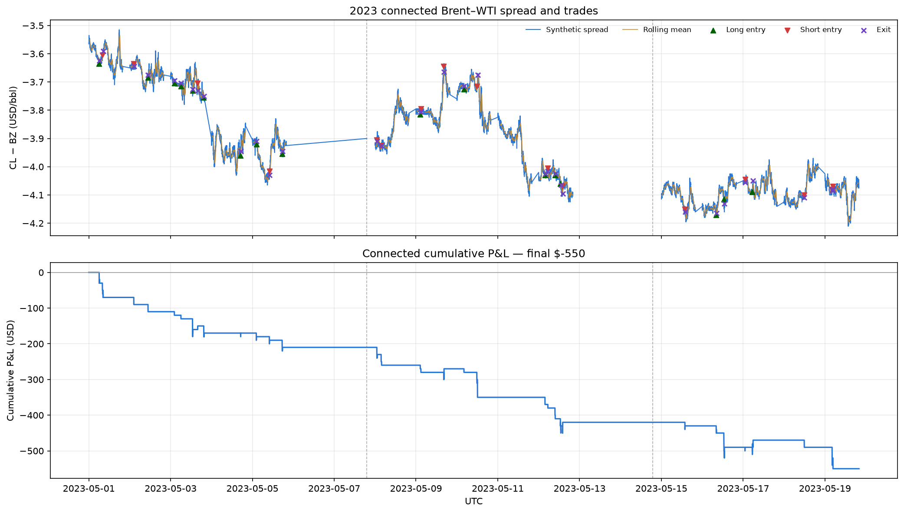
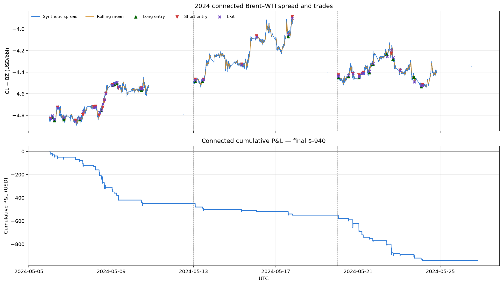
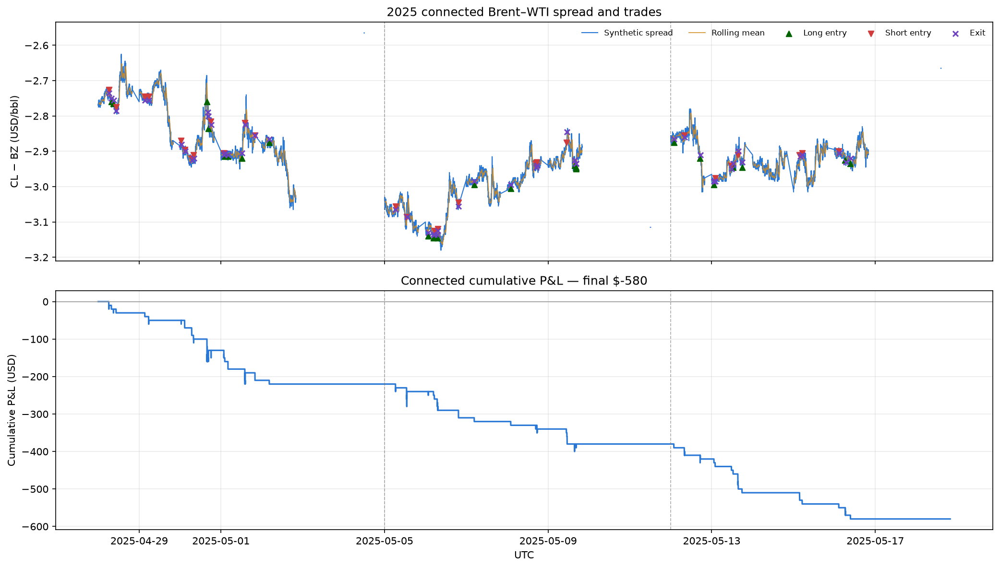
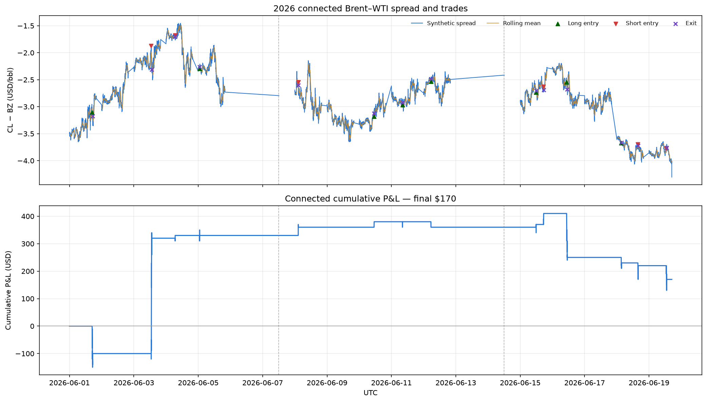

Multi-Week Backtest#
Strategy Results reports the June 1–5, 2026 pilot week and closes by asking for a larger sample, on the grounds that four trades cannot support a conclusion. This page answers that question. The same specification — 30-minute window, ±2.5σ entry, 15-minute maximum half-life — was run over twelve independent weekly blocks spanning 2023 through 2026.
The answer is negative. Across the twelve weeks the strategy completes 145 trades for −$1,900, winning 12 of them. The pilot week’s +$330 is the exception, not the rule.
Note
These results come from
notebooks/backtesting_period_analysis.ipynb,
not from the doit chain. The historical weeks are downloaded by
src/extend_backtest_periods.py, which is deliberately outside the pipeline
because it spends Databento credits on data the graded pipeline does not need.
See Caveats for what this changes.
By year#
Year |
Blocks |
Trades |
Winners |
Win rate |
Mean trade |
P&L |
|---|---|---|---|---|---|---|
2023 |
3 |
33 |
4 |
12.1% |
−$16.67 |
−$550 |
2024 |
3 |
48 |
0 |
0.0% |
−$19.58 |
−$940 |
2025 |
3 |
50 |
2 |
4.0% |
−$11.60 |
−$580 |
2026 |
3 |
14 |
6 |
42.9% |
+$12.14 |
+$170 |
Total |
12 |
145 |
12 |
8.3% |
−$13.10 |
−$1,900 |
Only 2026 is profitable, and it is the year containing the pilot week. 2024 is the clearest result on this page: 48 trades, not one of them a winner. A specification with any genuine edge does not go 0-for-48.
By block#
Each block is an independent backtest — rolling statistics, position state, and cumulative P&L all reset at the boundary, so no trade spans two blocks.
Year |
Block (UTC) |
Trades |
Winners |
Mean width |
Mean hold |
P&L |
|---|---|---|---|---|---|---|
2023 |
05-01 → 05-05 |
13 |
1 |
$0.0163 |
9.0 min |
−$210 |
2023 |
05-07 → 05-12 |
12 |
2 |
$0.0155 |
11.2 min |
−$210 |
2023 |
05-14 → 05-19 |
8 |
1 |
$0.0213 |
11.6 min |
−$130 |
2024 |
05-06 → 05-12 |
23 |
0 |
$0.0164 |
12.3 min |
−$450 |
2024 |
05-13 → 05-19 |
8 |
0 |
$0.0159 |
5.1 min |
−$100 |
2024 |
05-20 → 05-26 |
17 |
0 |
$0.0179 |
11.2 min |
−$390 |
2025 |
04-28 → 05-04 |
20 |
1 |
$0.0118 |
8.1 min |
−$220 |
2025 |
05-05 → 05-11 |
16 |
1 |
$0.0116 |
7.4 min |
−$160 |
2025 |
05-12 → 05-18 |
14 |
0 |
$0.0113 |
9.9 min |
−$200 |
2026 |
06-01 → 06-05 |
4 |
2 |
$0.0247 |
16.2 min |
+$330 |
2026 |
06-06 → 06-12 |
4 |
2 |
$0.0273 |
2.0 min |
+$30 |
2026 |
06-14 → 06-19 |
6 |
2 |
$0.0270 |
16.3 min |
−$190 |
Mean width is the average quoted width of the listed spread over the block, in $/bbl. The 06-01 → 06-05 row is the pilot week, and it reproduces Strategy Results exactly: 4 trades, +$330, 16.2-minute mean hold.
Ten of the twelve blocks lose money. The two that do not are the pilot week and the week immediately after it.
The average trade pays the spread and captures nothing#
The per-trade average is the most informative number in the table. Across all 145 trades the strategy averages −$13.10, while the mean quoted width of the listed spread is $0.0181/bbl. At the 1,000-barrel multiplier, a round trip that enters at the ask and exits at the bid pays that full width:
So the average trade recovers roughly $5 of the $18 it spends getting in and out. The signal is not worthless — it is just far smaller than the cost of acting on it. This is the same mechanism Strategy Results identified in trade 1 of the pilot week, which reverted exactly as designed and still lost $100. What the twelve-week sample adds is that the pilot week was not unlucky; paying more than the edge is the strategy’s normal behavior.
It also reframes the trade count. The pilot week’s four trades looked like a problem of an over-restrictive stationarity gate, and Strategy Results shows ADF rejecting 227 of 232 candidate windows. The other blocks fire 8 to 23 trades each, so the gate is not uniformly binding — and the blocks that trade more lose more. Loosening the gate to generate more trades would have made the result worse, not better.
Yearly figures#
Each figure connects the three blocks within a year. The upper panel shows the synthetic spread with its rolling mean, green and red markers for long and short entries, and purple crosses for exits. The lower panel shows cumulative P&L. Dashed vertical lines mark block boundaries, and the gaps between blocks are calendar time that was not traded.


The 2024 panel is the cleanest illustration of the cost argument: the cumulative P&L line is a monotone staircase down, with no offsetting winners at all.


2026 stands apart on the spread panel rather than the P&L panel. Its synthetic spread volatility averages about $0.47/bbl across the three blocks against roughly $0.07/bbl in 2025 — six to seven times as much — and its quoted width is more than twice as wide. The strategy needs deviations large enough to clear a wider book, and 2026 is the only sampled year that supplies them. Whether that is a regime worth targeting or simply the year we happened to sample most heavily is not answerable from three weeks.
An alternative specification#
notebooks/ewm_7d_zscore_backtest.ipynb
tests a different parameterization on the same data: a five-trading-day
exponentially weighted z-score instead of a 30-bar rolling window, a looser
±2.0 entry threshold, a tighter $100 stop loss, and a 120-minute time stop.
The longer EWM baseline is the direct response to the statistical-power problem
in Strategy Results, where ADF is asked to reject a unit
root from only 30 observations.
These are sensitivity checks, not a tuned replacement specification. Reporting them that way is deliberate: with twelve weeks of data and a cost floor of about $18 per round trip, a search over thresholds that found a profitable combination would more likely be fitting the sample than finding an edge.
Caveats#
The pilot week is inside the sample. The 2026 total includes the +$330 week, so the twelve-week result is not independent evidence about it. The other eleven weeks total −$2,230.
Different market-data schema. The pilot pipeline builds its grids from
mbp-1event data.src/extend_backtest_periods.pypullsbbo-1mfor the historical weeks, which gives one quote observation per minute and carries no trade-action flag. The one-minute strategy inputs are comparable, but the historical blocks cannot support the microstructure work in Spread Diagnostics.Seasonally concentrated. Nine of the twelve blocks fall in late April and May; the 2026 blocks are in June. The sample says little about the rest of the calendar.
Not reproducible from
doitalone. Regenerating these results requires runningsrc/extend_backtest_periods.pyfirst, which spends Databento credits. See How to Run.
Reproducing#
python src/extend_backtest_periods.py --estimate-only # price the pull first
python src/extend_backtest_periods.py # -> _data/clean/*.parquet
jupyter nbconvert --execute --inplace \
notebooks/backtesting_period_analysis.ipynb
The notebook writes its tables to _output/backtesting_period_analysis/ and the
four yearly figures to docs_src/figures/. Neither step is part of the default
doit chain.